Wie löse ich Matheaufgaben?
Trigonometrie
Sie sehen ein gelbes Eingabefeld und die
Schalter: Prüfen und Lösung.
Tragen Sie Ihr Ergebnis ein, prüfen Sie es
oder starten Sie eine Lösung.
Aufgabe 133
Berechnen Sie die Seite b, wenn a = 7,8 cm,
c = 9,6 cm und γ = 68°.
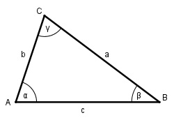
Aufgabe 134
Berechnen Sie die Seite c, wenn b = 2,4 m,
α = 43° und β = 64°.
Aufgabe 135
Berechnen Sie die Seite a, wenn b = 62,8 cm,
α = 65° und γ = 48°.
Aufgabe 136
Berechnen Sie die Seite b, wenn a = 322,6 m,
c = 283,7 m und γ = 27°.
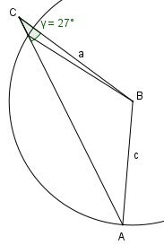
kürzere Seite = mAufgabe 137
Berechnen Sie den Winkel α, wenn a = 14,3 m,
b = 26 m und γ = 82,1°.
Aufgabe 138
Berechnen Sie die Fläche A des Parallelogramms.
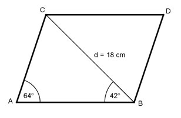
A = cm2Aufgabe 139
Berechnen Sie den Winkel α, wenn a = 27 m,
c = 38 m und β = 124°.
Aufgabe 140
Berechnen Sie die Fläche A eines Dreiecks, wenn a = 45 m, b = 296 m und c = 325 m.
A = m2Aufgabe 141
Berechnen Sie den Umkreisradius ra und den Inkreisradius ri eines Dreiecks, wenn a = 32,1 m, b = 13,2 m und c = 39,4 m.
Aufgabe 142
Berechnen Sie die Länge der Diagonalen f, wenn a = 3,9 cm, b = 2,1 cm und α = 47°.
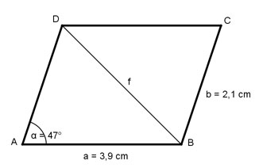
f = cmAufgabe 143
Berechnen Sie den Winkel γ, wenn b = 4,5 cm,
c = 5 cm und hc = 3 cm.
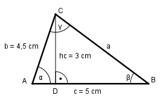
Aufgabe 144
Berechnen Sie die Seite a, wenn ha = 25,3 m,
α = 98,8° und β = 34,2°.
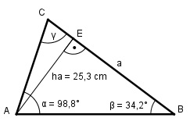
a = cmAufgabe 145
Berechnen Sie den Winkel α, wenn a = 55,6 m,
c = 66 m und die Seitenhalbierende sc = 32,7 m.
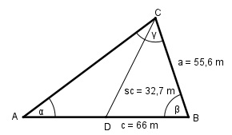
Aufgabe 146
Wie lang ist die kleinere der fehlenden
Dreieckseiten, wenn b = 6,25 m,
hb = 5,12 m
und sb = 5,57 m.
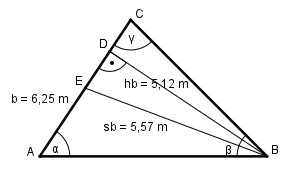
Sie ist m lang.Aufgabe 147
Berechnen Sie die Seite b, wenn c = 160 m,
ha = 91 m und die Winkelhalbierende wβ = 97 m.
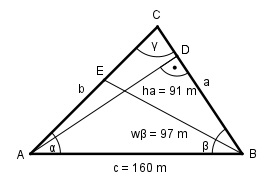
Aufgabe 148
Berechnen Sie die Seite b, wenn hc = 4 cm,
wγ = 4,4 cm und sc = 5,3 cm.
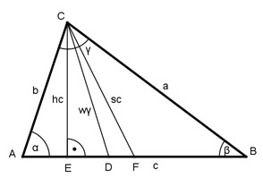
b = cmAufgabe 149
Berechnen Sie den Winkel α, wenn sich die Seiten a, b und c wie 3 : 5 : 7 verhalten.
Aufgabe 150
Berechnen Sie den Winkel β, wenn b = 42,5 m,
γ = 85°40' und a und c sich wie 5 : 8 verhalten.
Aufgabe 151
Wie groß ist die Fläche A des Parallelogramms?
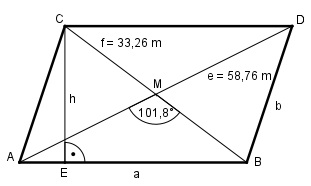
Aufgabe 152
Wie groß sind die Fläche A und die Seite b des gleichschenkligen Trapezes?
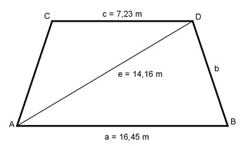
A = m2Aufgabe 153
Wie groß sind die Diagonalen e und f des Trapezes?
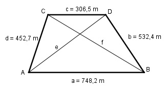
Aufgabe 154
Wie groß sind die Seite c und die Diagonale f des Trapezes?
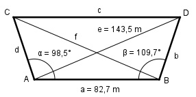
c = mAufgabe 155
Wie groß ist die Seite c des Sehnenvierecks?
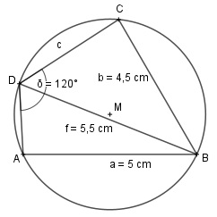
Aufgabe 156
Wie groß ist die Seite d des Sehnenvierecks?
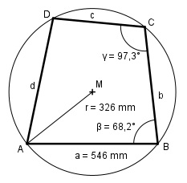
d = mmAufgabe 157
Wie groß ist der Winkel δ des Vierecks?
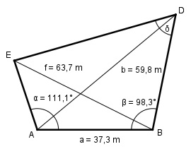
Aufgabe 158
Wie groß ist die Diagonale e des Drachenvierecks?
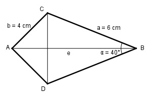
e = cmAufgabe 159
Wie groß ist die Diagonale f des Drachenvierecks?
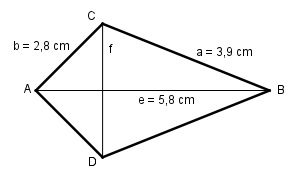
Aufgabe 160
Wie groß ist die Diagonale f des Drachenvierecks?
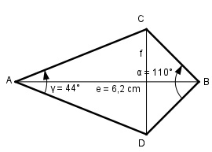
f = cmAufgabe 161
Wie groß ist die Seite b des Drachenvierecks?
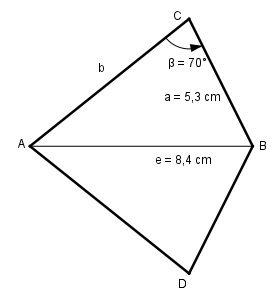
Aufgabe 162
Wie groß ist die Diagonale f des Sehnenvierecks?
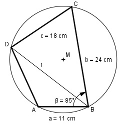
f = cmAufgabe 163
Wie groß ist die Diagonale f des Sehnenvierecks?
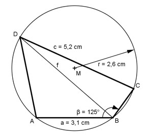
Aufgabe 164
Die Mittelpunkte zweier Kreise mit den Radien
r1 = 6 cm und r2 = 4 cm liegen 8 cm auseinander.
Wie groß ist die gemeinsame Sehne s?
Aufgabe 165
Wie groß ist die Seite c des gleichschenkligen Trapezes?
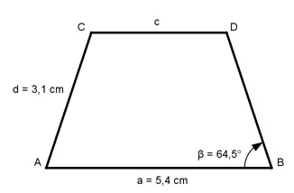
Aufgabe 166
Wie groß ist die Seite a des gleichschenkligen Trapezes?
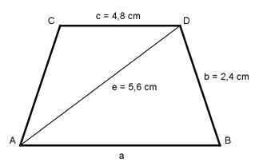
a = cmAufgabe 167
Wie groß ist die Seite a des gleichschenkligen Trapezes?
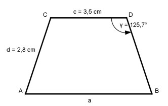
Aufgabe 168
Wie groß ist die Diagonale e des gleichschenkligen Trapezes?
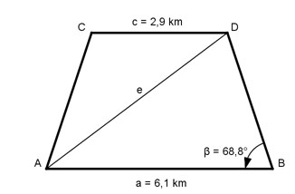
e = kmAufgabe 169
Wie groß sind die Oberfläche O und das Volumen V
einer Dreieckspyramide mit 10 cm langen Seiten-
kanten, wenn die Seiten der Grundfläche
a = 5 cm,
b = 7 cm und c = 8 cm lang sind?
Wie groß ist der Winkel α, den die Seitenkanten
mit der Grundfläche bilden?
Wie groß ist der Winkel β, den die Grundfläche
mit der Seitenfläche über a bildet?
Aufgabe 170
Aus einem Kreisausschnitt mit dem Radius
r = 15 cm und dem Mittelpunktswinkel α = 105°
ist ein Kegel gebogen worden.
Wie groß ist dessen Volumen V?
Aufgabe 171
Wie groß sind die Seite c und der Winkel α,
wenn a + b = 52 cm, γ = 60° , A = 160 * √3 cm3
und
a > b sein soll?
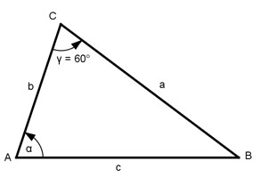
Aufgabe 172
Die Seitenfläche und die Grundfläche einer regelmäßigen geraden dreiseitigen Pyramide verhalten sich wie 2 : 1. Berechnen Sie den Neigungswinkel α einer Seitenfläche gegen die Grundfläche.
α = °Aufgabe 173
Durch die Grundseite a = 4 cm eines geraden regelmäßigen dreiseitigen Prismas verläuft eine Ebene, die um 50,7° geneigt ist. Wie groß ist das Volumen V der abgeschnittenen Pyramide?
Aufgabe 174
Eine gerade regelmäßige fünfseitige Pyramide hat
die Grundseite
a = 10 cm und Seitenkanten
s = 13 cm.
Wie groß sind der Winkel α zwischen Grundseite
und Seitenkante und der Winkel δ zwischen zwei
Seitenflächen?
Aufgabe 175
Ein gerades dreiseitiges Prisma, dessen Höhe
> 56 cm ist, hat als Grundfläche ein Dreieck mit
den Seiten a = 33 cm, b = 21 cm und
c = 45 cm.
Eine Ebene, die durch C geht, schneidet die
Seitenkante über A in einer Höhe von 28 cm, die
über B in einer Höhe von 56 cm.
Wie groß sind die größte Seite s dieses Schnittdreiecks und seine Fläche A?
Aufgabe 176
Ein gerades dreiseitiges Prisma hat ein Volumen von 400 cm³. Seine Grundfläche hat die Winkel α = 42,5° und β = 71,3°. Wie groß ist das Volumen V des umschriebenen Zylinders?
V = cm3 >Aufgabe 177
Ein schiefer Kegel hat eine längste Mantellinie von 30 cm, mit einem Neigungswinkel von 31,2°. Seine kürzeste hat einen Neigungswinkel von 82,4°. Wie groß ist das Volumen V des Kegels?
Aufgabe 178
Einem geraden Kegel mit dem Öffnungswinkel
α = 31,6° ist eine Kugel mit dem Durchmesser
d = 55,4 cm einbeschrieben.
Wie groß ist das Volumen V des Kegels?
Aufgabe 179
Berechnen Sie den Winkel α, den eine Raum- diagonale des Quaders mit einer Flächendiagonale und den Schnittwinkel β, den zwei Raumdiagonalen miteinander bilden.
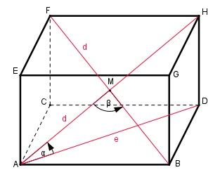
Aufgabe 180
Wie groß ist die Seite d?
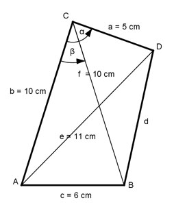
d = cmzurück